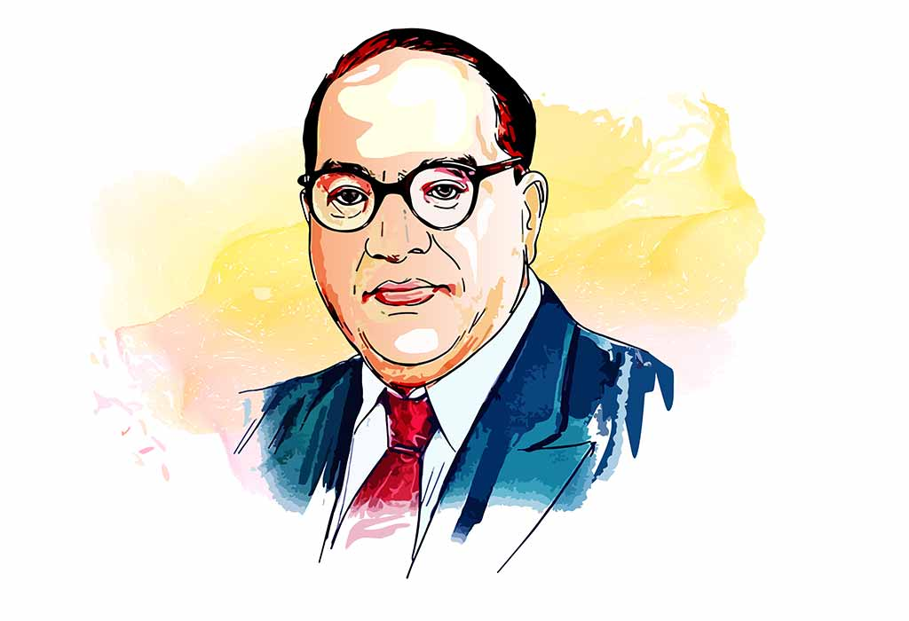

Dr. B. R. Ambedkar

Name : Bhimrao Ramji Ambedkar
Born : 14th April 1891
Death : 6 th December 1956
About The Legend
- Dr. Bhimrao Ramji Ambedkar (1891-1956) was born on 14 April 1891 in Mhow Cantonment, Madhya Pradesh. He completed his primary schooling in Satara, Maharashtra and completed his secondary education from Elphinstone High School in Bombay.
- His education was achieved in the face of significant discrimination, for he belonged to the Scheduled Caste (then considered as ‘untouchables’). In his autobiographical note ‘Waiting for a Visa’, he recalled how he was not allowed to drink water from the common water tap at his school, writing, "no peon, no water".
- Dr Ambedkar graduated from Bombay University in 1912 with a B.A. in Economics and Political Science. On account of his excellent performance at college, in 1913 he was awarded a scholarship by Sayajirao Gaikwad, then Maharaja (King) of Baroda state to pursue his M.A. and Ph.D. at Columbia University in New York, USA.
- His Master's thesis in 1916 was titled “The Administration and Finance of the East India Company”. He submitted his Ph.D. thesis on “The Evolution of Provincial Finance in India: A Study in the Provincial Decentralization of Imperial Finance”.
- After Columbia, Dr. Ambedkar moved to London, where he registered at the London School of Economics and Political Science (LSE) to study economics, and enrolled in Grey’s Inn to study law. However, due to lack of funds, he had to return to India in 1917.
- In 1918, he became a Professor of Political Economy at Sydenham College, Mumbai (erstwhile Bombay). During this time, he submitted a statement to the Southborough Committee demanding universal adult franchise.
- In 1920, with the financial assistance from Chatrapati Shahuji Maharaj of Kolhapur, a personal loan from a friend and his savings from his time in India, Dr. Ambedkar returned to London to complete his education.
- In 1922, he was called to the bar and became a barrister-at-law. He also completed his M.S.c. and D.S.c. from the LSE. His doctoral thesis was later published as “The Problem of the Rupee”.
- After his return to India, Dr Ambedkar founded Bahishkrit Hitkarini Sabha (Society for Welfare of the Ostracized) and led social movements such as Mahad Satyagraha in 1927 to demand justice and equal access to public resources for the historically oppressed castes of the Indian society. In the same year, he entered the Bombay Legislative Council as a nominated member.
- Subsequently, Dr. Ambedkar made his submissions before the Indian Statutory Commission also known as the ‘Simon Commission’ on constitutional reforms in 1928. The reports of the Simon Commission resulted in the three roundtable conferences between 1930-32, where Dr. Ambedkar was invited to make his submissions.
- In 1935, Dr. Ambedkar was appointed as the Principal of Government Law College, Mumbai, where he was teaching as a Professor since 1928. Thereafter, he was appointed as the Labour Member (1942-46) in the Viceroy’s Executive Council.